Proposta 1
Archivo Black
Grottesco robusto, largo e stabile. È il più vicino all'Arial Black di adesso: cambia poco rispetto a quello che i clienti già conoscono, ma è pulito e leggibile in piccolo.
Il simbolo resta quello che c'è: la B del titolare con la linea ambra. Cambia solo il carattere del nome, che ora è disegnato in tracciati — non più testo vivo, quindi non si tronca e non dipende dai caratteri installati sul computer di chi apre il file.
Il file esportato legge «AUTOTRASPOR»: le ultime due lettere escono dalla tela. Nella versione impilata il nome è tagliato da entrambi i lati.
Grottesco robusto, largo e stabile. È il più vicino all'Arial Black di adesso: cambia poco rispetto a quello che i clienti già conoscono, ma è pulito e leggibile in piccolo.
Condensato e alto, come le scritte sulle fiancate dei mezzi. Occupa meno spazio in larghezza e ha più forza: si vede da lontano, che per un camion non è un dettaglio.

Via di mezzo: condensato ma con forme più tecniche e meno spigolose. Tono contemporaneo, meno «cartello stradale» di Anton e meno pesante di Archivo.